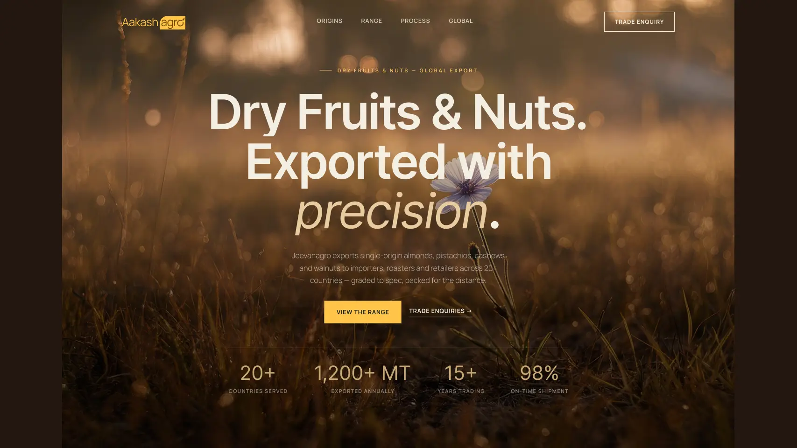

Make products scannable
Categories provide a clearer way into the catalogue than a single undifferentiated list.
A B2B export website concept centred on product information, sourcing context and enquiries.

Trade buyers need enough context about products, sourcing and supplier credibility before starting a conversation.
I organised the concept around product categories, sourcing context and a direct enquiry path, with a visual direction that supports the information.
Categories provide a clearer way into the catalogue than a single undifferentiated list.
The concept gives product origin and supplier information a place in the browsing experience.
The page points visitors towards contact, which is the useful next action for a B2B export concept.
The intended experience helps buyers find relevant details and make a more informed enquiry. This concept has no measured business outcome.
Validate which details buyers actually need before enquiring, then test the navigation and enquiry path with representative users.